3. Configurazione di un ambiente di lavoro
Qui illustriamo l'ambiente di lavoro utilizzato per testare gli script Python generati da IA. Questo paragrafo è rivolto ai principianti di Python. Se disponete già di un ambiente di lavoro Python, saltate l'intero paragrafo e passate al paragrafo successivo.
3.1. Python 3.13.7
Gli esempi contenuti in questo documento sono stati testati con l'interprete Python 3.13.7 disponibile all'indirizzo URL |https://www.python.org/downloads/| (agosto 2025) su un computer con sistema operativo Windows 10:

Da [1-2] scaricare il file eseguibile del programma di installazione di Python, quindi eseguirlo.
L'installazione di Python crea la seguente struttura di file [1]:

Per eseguire Python in modalità interattiva, fare doppio clic su [2]. Ecco un esempio di codice Python da eseguire:

Il prompt >>> consente di inserire un'istruzione Python che viene eseguita immediatamente. Il codice digitato sopra ha il seguente significato:
Righe:
- 1: inizializzazione di una variabile. In Python non si dichiara il tipo delle variabili. Queste assumono automaticamente il tipo del valore che viene loro assegnato. Tale tipo può cambiare nel corso del tempo;
- 2: visualizzazione del nome. 'nom=%s' è un formato di visualizzazione in cui %s è un parametro formale che indica una stringa di caratteri. nom è il parametro effettivo che verrà visualizzato al posto di %s;
- 3: il risultato della visualizzazione;
- 4: visualizzazione del tipo della variabile nome;
- 5: la variabile nom è qui di tipo class. Con Python 2.7 avrebbe il valore <type 'str'>;
Ora apriamo una console di Windows:

Il fatto che sia stato possibile digitare [python] al posto di [1] e che sia stato trovato l'eseguibile [python.exe] dimostra che quest'ultimo si trova nella directory PATH del computer Windows. Questo è importante perché significa che gli strumenti di sviluppo Python saranno in grado di individuare l’interprete Python. È possibile verificarlo in questo modo:

- In [1], si esce dall'interprete Python;
- In [2], il comando che visualizza PATH degli eseguibili del computer Windows;
- In [3], si vede che la cartella dell’interprete Python 3.13 fa parte di PATH;
3.2. IDE PyCharm Community
Per compilare ed eseguire gli script di questo documento, abbiamo utilizzato l'editor [PyCharm] Edition Community disponibile (agosto 2025) su URL |https://www.jetbrains.com/fr-fr/pycharm/download/#section=windows| :


Scaricate IDE PyCharm Community (qui per Windows) [1-4] e installatelo.
Avviamo IDE PyCharm. Viene visualizzata una finestra di configurazione:

- In [1] per creare l’icona PyCharm sul desktop;
- In [2] per aprire qualsiasi cartella del file system come progetto Python;
- In [3], i file Python avranno l'estensione .py;
- In [4], passare alla fase successiva;
La finestra successiva propone nuovamente la configurazione [1]:

- In [2], si seleziona il tema [Light]. Il lettore sceglierà il tema che preferisce;
- In [3], si lascia IDE in inglese;
- In [4], si mantengono i collegamenti di Windows;
Creiamo un primo progetto Python [1-2]:
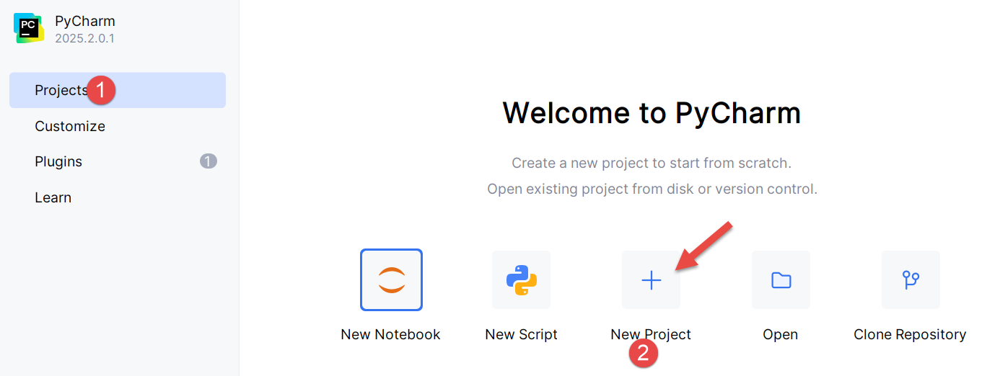
Si apre la seguente finestra:
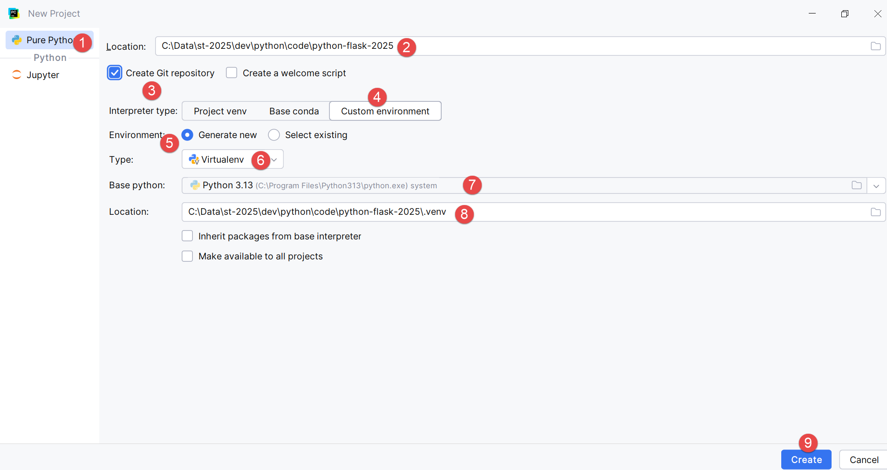
- In [2], specificare il nome della cartella da creare per il progetto;
- In [3], specificare che le diverse versioni del codice che verranno salvate saranno gestite dal sistema di controllo delle versioni Git. PyCharm consente di utilizzarne altri;
- In [4-6], specificare che il progetto utilizzerà un ambiente virtuale. L’ambiente virtuale creerà una cartella [.venv] nella directory principale del progetto. Tutti i plugin (pacchetti) utilizzati dal progetto verranno inseriti in questa cartella. Ciò garantisce l’isolamento tra i progetti durante la ricerca dei plugin. Il progetto cerca i propri plugin solo nel proprio ambiente virtuale [.venv] e non altrove, dove potrebbe trovare plugin con lo stesso nome ma versioni potenzialmente diverse, che a volte sono parzialmente incompatibili tra loro;
Il IDE PyCharm presenta il progetto creato nella forma seguente:

- In [1-2], la struttura ad albero del progetto;
- In [3], la cartella del progetto;
- In [4], la cartella dell’ambiente virtuale del progetto. È in questa cartella che verranno installati i plugin che useremo per il progetto;
Prima di iniziare a programmare, approfondiamo la configurazione di IDE:
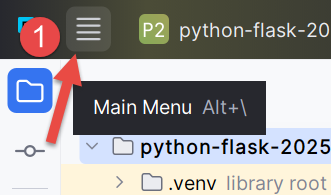
- Fare clic su [1] per visualizzare il menu principale;

- In [1-2], configurare IDE;

- In [1-4], specificare che si desidera visualizzare il menu principale sopra la barra degli strumenti principale. Non è obbligatorio. Lo si fa qui per chiarire le schermate riportate in questo documento. Confermare la modifica;
D'ora in poi, il menu principale sarà sempre visualizzato [1]:

Continuiamo con la configurazione di IDE:

In alto a destra della finestra di PyCharm, viene proposto di provare la versione pro di PyCharm. A seconda di come avete installato PyCharm, è possibile che la versione Pro sia stata installata automaticamente (2025). Ciò comporta la presenza di ulteriori opzioni di menu.

Se avete installato la versione Pro di prova per un mese, in alto a destra compare il messaggio [2].
Sempre per garantire la coerenza delle schermate che seguiranno, vi mostro come disattivare la versione di prova Pro di IDE (potrete riattivarla in qualsiasi momento):

- In [1-2], gestite gli abbonamenti del vostro IDE;

- In [1], disattivate la versione pro. IDE si riavvierà;
Ora configuriamo l’interprete Python che eseguirà il nostro progetto. Ricordiamo di averne scaricato uno in una fase precedente:


- In [1-3], configuriamo l’interprete Python del progetto;
- In [4], il percorso dell’interprete;
- In [5], i pacchetti (plugin) associati a questo interprete;
In [4], scopriamo il percorso completo dell’interprete utilizzato:
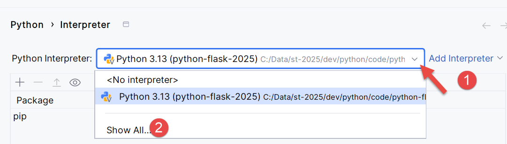

- In [3], si scopre che l’interprete Python utilizzato si trova nella cartella dell’ambiente virtuale del progetto [.venv];
È possibile cambiare l’interprete Python, il che può modificare i plugin disponibili per il progetto:

- In [4], aggiungere un interprete Python;
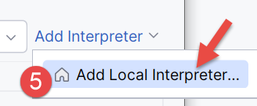
- In [5], aggiungere un interprete locale. PyCharm esplorerà quindi il PATH del computer alla ricerca di un file binario [python.exe];
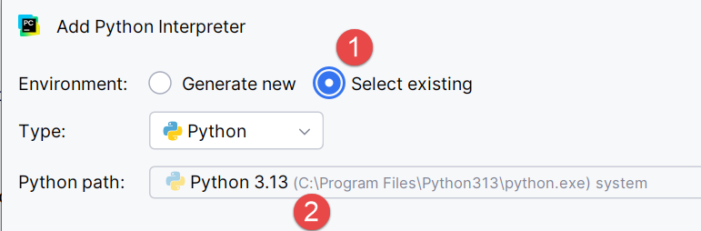
- In [1], specificare che il nuovo interprete deve utilizzare l’ambiente virtuale [.venv] già esistente nel progetto;
- In [2], IDE propone come interprete l'applicazione Python installata in una fase precedente;
- Confermare questa scelta;
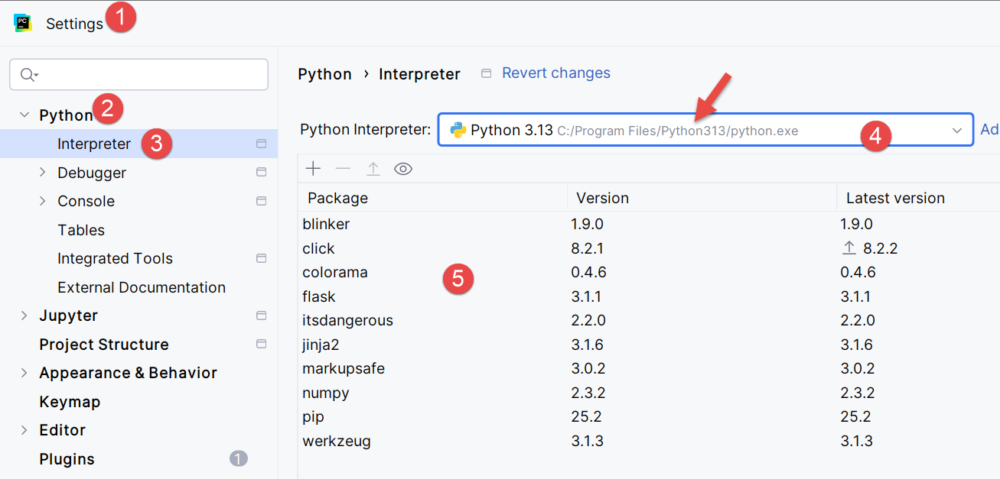
- In [4], il nuovo interprete;
- In [5], i pacchetti a cui avrà accesso il progetto. Questa è la principale differenza introdotta dal cambio di interprete. Se gestite più progetti che utilizzano pacchetti diversi, è preferibile utilizzare i pacchetti dell’ambiente virtuale di ciascun progetto. In questo modo avrete il controllo sulle versioni dei plugin che utilizzate. Per questo motivo, manterremo l’interprete dell’ambiente virtuale:


Approfondiamo un po’ la configurazione:
 | 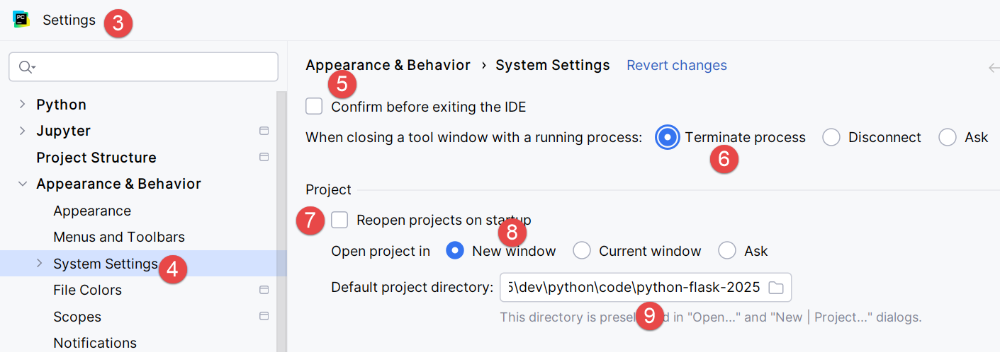 |
- In [1-2], accedete alla modalità di configurazione di IDE;
- In [3-4], configurare le opzioni di sistema;
- In [5], non viene richiesta alcuna conferma prima di uscire da IDE;
- In [6], quando si esce da IDE e c’è un processo in esecuzione avviato dal codice eseguito, lo si interrompe;
- In [7], all’avvio di IDE, l’ultimo progetto utilizzato non viene riaperto automaticamente. Si lascia che sia l’utente a scegliere il proprio progetto;
- In [8], quando l’utente gestisce più progetti contemporaneamente, ogni progetto ha la propria finestra dedicata;
- In [9], abbiamo specificato la cartella predefinita del nostro progetto;
Ora possiamo iniziare a programmare. Cominciamo creando una cartella in cui inseriremo il nostro primo script Python:
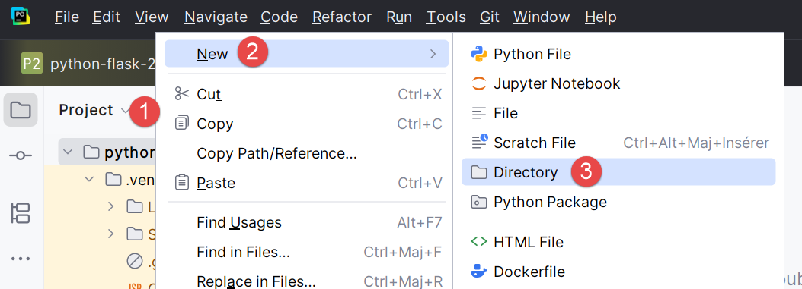 |  |
- Fare clic con il tasto destro del mouse sul progetto, quindi selezionare [1-3] per creare una cartella;
- In [4], digitare il nome della cartella: verrà creata nella cartella del progetto;

Creiamo quindi uno script Python:
 |  |
Fare clic con il tasto destro sulla cartella [bases], quindi su [1-4]:
 | 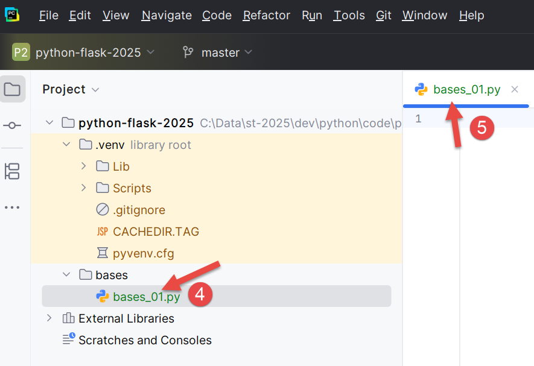 |
- Ricordiamo che abbiamo integrato il sistema di controllo delle versioni Git nel nostro progetto. Ciò è avvenuto al momento della creazione del progetto, quando abbiamo selezionato l’opzione Git. Git può creare snapshot del progetto in diverse fasi del suo sviluppo. Qui, in [1-3], IDE ci chiede se vogliamo includere il file [bases.py] che stiamo creando nell’istantanea. Rispondiamo sì ([3]). Inoltre, selezioniamo [2] affinché questa operazione venga eseguita automaticamente ogni volta che si crea un file. Torneremo brevemente su Git più avanti;
- In [4-5], lo script [bases_01] è stato creato ed è pronto per essere modificato;
Scriviamo il nostro primo script:
 |  |
- Righe 1, 3: i commenti iniziano con il simbolo #;
- Riga 2: inizializzazione di una variabile. Python non dichiara il tipo delle sue variabili;
- Riga 4: visualizzazione sullo schermo. La sintassi utilizzata qui è [format % données] con:
- formato: nome=%s dove %s indica la posizione di una stringa di caratteri. Questa si troverà nella parte [données] dell'espressione;
- dati: il valore della variabile [nom] sostituirà il formato %s nella stringa di formato;
- Con [1-2], si riformatta il codice secondo le raccomandazioni dell’ente che gestisce Python. È anche possibile digitare sulla tastiera la sequenza Ctrl-Alt-L;
Nello screenshot si nota che alcuni testi sono sottolineati. PyCharm segnala errori ortografici nei commenti e nelle stringhe di caratteri. Li definisce «errori di battitura». Per impostazione predefinita è configurato per testi in inglese. Per evitare che vengano segnalati errori di battitura in francese, procedere come segue:
 |  |
- In [1-2], configuriamo IDE;
- In [3-6], disattiviamo l’opzione [Proofreading] dell’editor;
 |  |
In [7], la segnalazione degli errori di battitura è scomparsa. Lo script viene eseguito cliccando sull’icona [8] nella barra degli strumenti principale. Il risultato è il seguente:

- In [1-2] si è aperta una finestra dei risultati;
- In [3], si vede che il codice di [bases_01.py] è stato eseguito dall’interprete Python dell’ambiente virtuale del progetto;
- In [4], il risultato dell’esecuzione;
Per eseguire gli script di questo documento, scaricate il codice da URL |Generare uno script Python con gli strumenti di IA| (cloud OneDrive), quindi in PyCharm procedere come segue:
 |
- In [1-2], chiudere il progetto su cui si sta lavorando;

- In [1], selezionare l’opzione [Projects];
- Nella finestra [2] è presente l'elenco degli ultimi progetti su cui si è lavorato;
- In [3], si indica che si desidera aprire un progetto esistente;
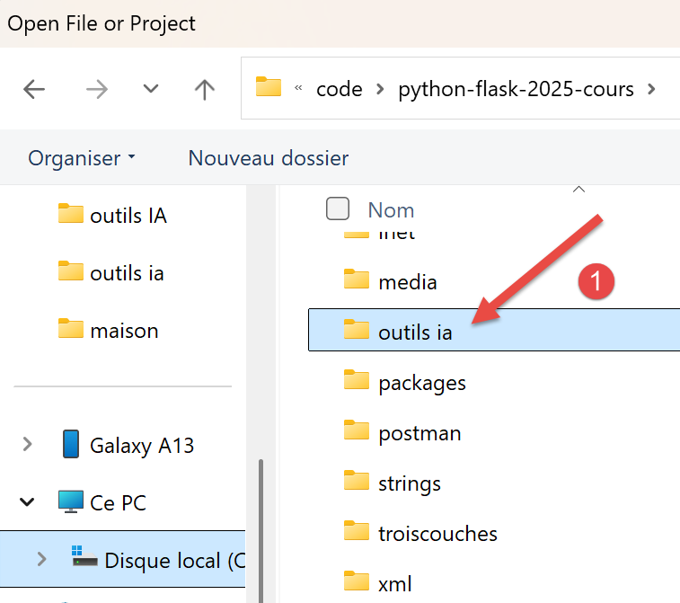 |
- In [1], si apre la cartella che è stata scaricata;
 |
- In [1-2], il progetto PyCharm;
Configuriamo questo progetto in modo che disponga di un ambiente di esecuzione virtuale:
 |
- In [1-2], si configura il nuovo progetto;
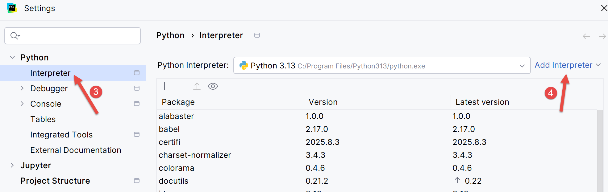 |
- In [3-4], si configura un interprete per il progetto;
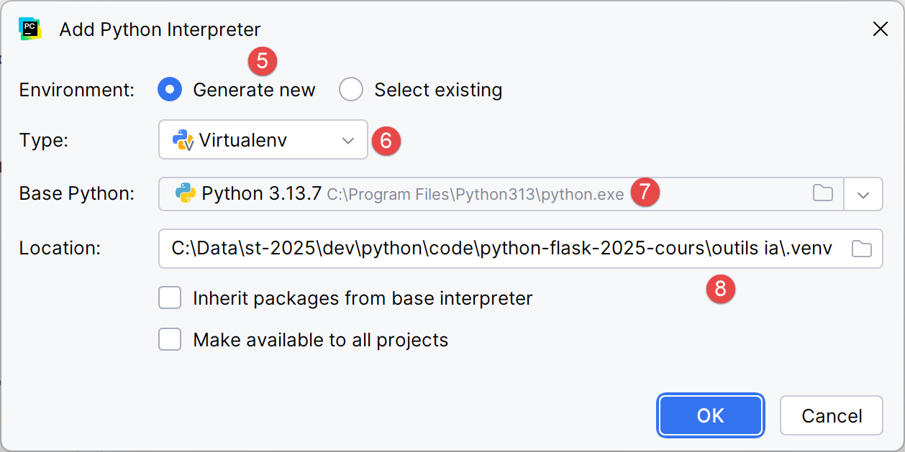 |
- In [5-6], si sceglie un ambiente di esecuzione virtuale;
 |
- In [7], si imposta il nuovo interprete Python da utilizzare per il progetto;
Fatto ciò, è possibile eseguire gli script del progetto:
 |